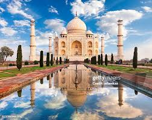
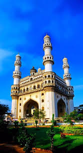
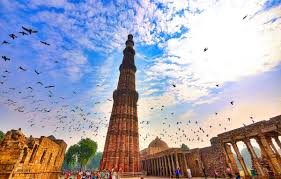
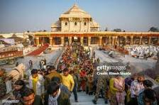

Historical Places
Victoria-Memorial

Representing the resplendent and majestic Italian Renaissance style of architecture, beautifully blended with Indian influences, Victoria Memorial Hall stands today, as a veritable icon of the city of Kolkata. VMH was envisaged by Lord Curzon, the Viceroy of British India, as a memorial to the deceased Queen Victoria.
Akshardham-Temple

Akshardham' means the divine abode of God. It is hailed as an eternal place of devotion, purity and peace. Swaminarayan Akshardham at New Delhi is a Mandir an abode of God, a Hindu house of worship, and a spiritual and cultural campus dedicated to devotion, learning and harmony.
Tajmahal
The word "Taj Mahal" is derived from Persian and Arabic, and means "crown palace" or "crown place". The word is made up of the Persian words taj which means "crown" and mahal which means "palace".The Taj Mahal is a white marble mausoleum in Agra, India, built by Emperor Shah Jahan between 1632 and 1643
Red-Fort

The name Red Fort is a translation of the Hindustani Lāl Qila (Hindi: लाल क़िला, Urdu: لال قلعہ), deriving from its red sandstone walls. The term Lal is derived from Hindi, meaning "red," while Qila originates from Arabic, signifying "fortress"
Golden-Temple

Nomenclature. The Harmandir Sahib (Gurmukhi: ਹਰਿਮੰਦਰ ਸਾਹਿਬ) is also spelled as Harimandar or Harimandir Sahib. It is also called the Durbār Sahib (ਦਰਬਾਰ ਸਾਹਿਬ), which means "sacred audience", as well as the Golden Temple for its gold leaf-covered sanctum centre.
Biswa Bangla Gate

Biswa Bangla Gate is an arch-monument in the city of New Town, Kolkata, West Bengal, India. It is built by Housing Infrastructure Development Corporation on the Biswa Bangla Sarani at Narkelbagan, Action Area - I of New Town, Kolkata metropolitan area. It also houses India's first hanging restaurant
Charminar
Charminar is one of the oldest monuments in India, and it is situated in Hyderabad, Telangana. Charminar was built in 1591 and is a symbol of Hyderabad. This monument is the official emblem of Telangana. Charminar is derived from Urdu, meaning 'Four Pillars
Qutub-Minar
The Qutub Minar is a minaret and victory tower in Delhi, India. It is a UNESCO World Heritage Site. The Qutub Minar is part of the Qutb complex, which is located on the site of Lal Kot, Delhi's oldest fortified city
Ayodhyadham
The word Ayodhya comes from the Sanskrit verb yudh, which means "to fight" or "to wage war". The word Ayodhya is a combination of the negative prefix a and the future passive participle yodhya, which means "to be fought". The word Ayodhya therefore means "not to be fought" or "invincible".